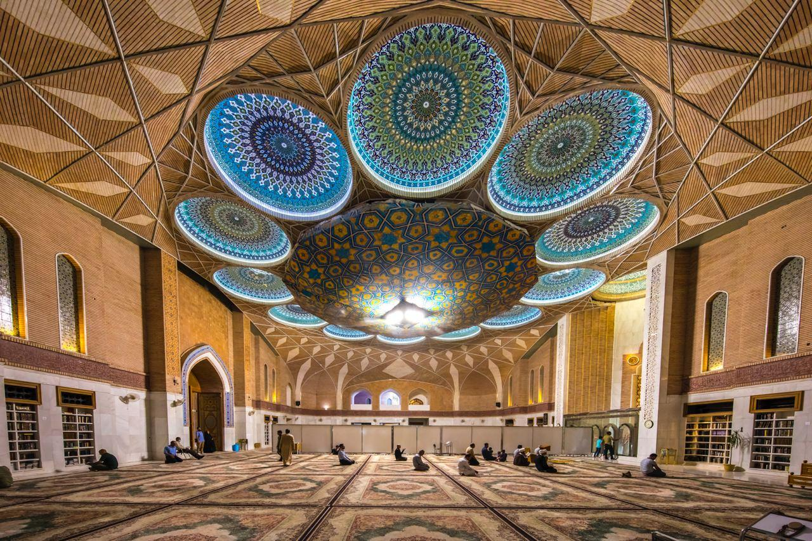

أما إنه منزل صاحبنا إذا قدم بأهله
“Indeed, it is the residence of our Master when he arrives with his family.”
Imam Ja'far al-Sadiq (AS) Kitab Al-GhaybaAHD-E-ZUHOOR
عهد الظهور
A journey through knowledge, towards recognition of the Imam of our time.
Enter the journey ↘
Five gateways.
One purpose.
Explore the lives, teachings and sources that deepen our understanding of the Imam of our time.
Prophetic
Blueprint
↗
Discover the lives of the Prophets and the source-grounded connections to the Imam of our time.
02 READ · STUDY · REFLECT
Knowledge
Library
↗
A guided reading space for foundational works and trusted scholarship.
03 THE WORDS TRANSMITTEDHadiths
↗Explore narrations with context, source details and careful references.
04 LEARN WITH PURPOSE
Digital Learning
Academy
↗
Structured learning journeys that turn information into understanding.
05 PRESERVE · VERIFY · CONNECT
Research &
Preservation Archive
↗
A careful home for research, source trails and preserved knowledge.